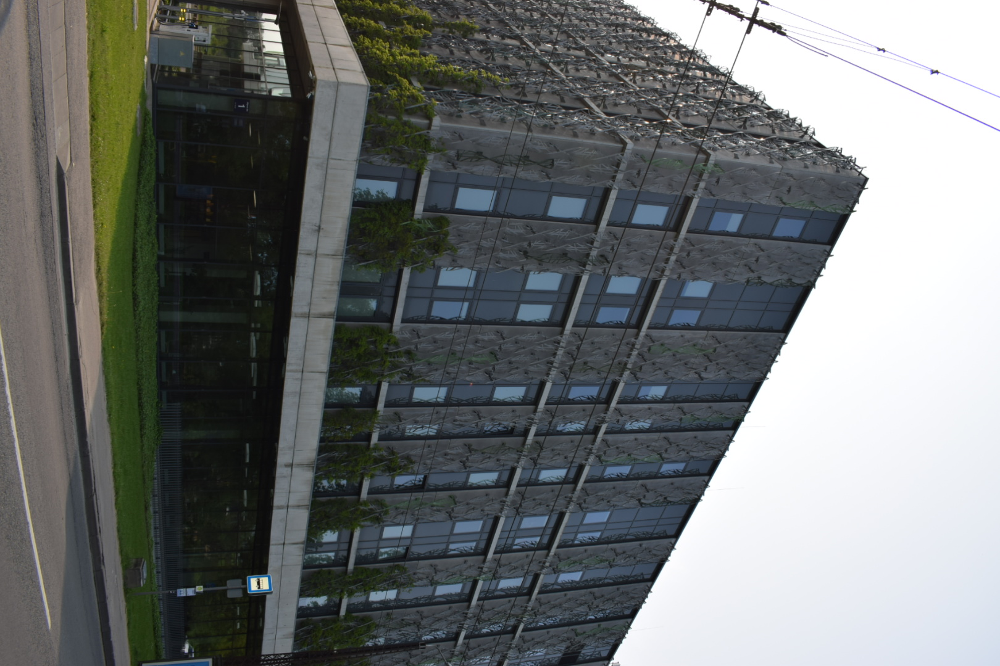

Latvijas Universitātes Dabas māja
Dabas māja atrodas Torņakalnā un ir daļa no LU Akadēmiskā centra. Šeit mācās un pēta studenti no Dabaszinātņu fakultātēm — bioloģijas, ķīmijas, fizikas un vides zinātnes. Ēka izceļas ar modernu arhitektūru un ilgtspējīgu dizainu.